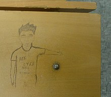

Надписи на партах
Материал из Википедии — свободной энциклопедии [править | править код]
Текущая версия страницы пока не проверялась опытными участниками и может значительно отличаться от версии, проверенной 25 января 2021 года; проверки требуют 16 правок.
Надписи на партах — разновидность молодёжных граффити, встречающаяся в учреждениях начального, среднего и высшего образования. Надписи могут размещаться как на рабочей поверхности, так и на других участках парты.
Содержание [скрыть]
- 1 Исследования надписей
- 2 Функции
- 3 Авторы надписей
- 4 Виды надписей
- 5 Адресаты надписей
- 6 Ответственность
- 7 См. также
- 8 Примечания
- 9 Литература
Исследования надписей [править | править код]
В России до конца XX века надписи на партах представляли собой сравнительно малоизученное явление[1]. Большинство учёных воспринимают их исключительно с нормативно-эстетической точки зрения, согласно которой они представляют собой только вредительство, порчу имущества учебного заведения. Однако в 2000-е годы появились исследования, направленные на изучение лингвистических характеристик надписей. Доминирующими подходами к описанию граффити являются исторический, социо-культурный, психолого-культурный, лингвокультурный и лингвистический подходы[2]. Тюкаева Н. И. в 2001—2004 годах провела исследование[3] студенческих граффити в Барнаульском государственном педагогическом университете, Алтайском государственном техническом университете, основу которого составили надписи на партах. В 2006 году школьница провела анализ надписей на партах школ города Кирова и благодаря своему исследованию стала лауреатом Всероссийских юношеских чтений им. В. И. Вернадского. Исследователи утверждают, что анализ надписей может оказать помощь в воспитательном процессе.
Функции [править | править код]
Надписи на партах выполняют следующие функции:
- создание второго мира, отвлечённого от повседневногобытия;
- психологическая разгрузка;
- коммуникативная функция;
- мифологическая функция[4];
- создание себе подсказки при экзамене, контрольной или проверочной работе.
Причинами создания надписей выступают:
- компенсация отсутствия возможности обратиться к адресату напрямую;
- компенсация отсутствия возможности массового распространения сообщения;
- компенсация отсутствия свободного времени;
- преодоление однообразия, монотонности процесса учёбы[4];
- боязнь экзамена, контрольной или проверочной работы.
Авторы надписей [править | править код]
Результаты исследований в высших учебных заведениях показали, что надписи чаще всего оставляют студенты I—II курсов (около 90 % всех надписей)[5]. Авторы надписей в основной своей массе относятся к процессу учёбы безучастно.
Типичный студенческий автор, как правило, материально зависим от родителей, посещает учебное заведение вынужденно, находится в поиске кандидатуры на место супруга или полового партнёра. Психологическая установка типичного автора: «Я пишу там, где не принято, потому что я лучший, и мне так хочется»[6][7].
Авторов надписей по стратегии поведения можно разделить на несколько групп.
- 1. По эмоционально-смысловой характеристике:
-
- лирические — стремящиеся придать своим проблемам художественный образ в виде поэтических и прозаических произведений («Хотеть не вредно, вредно не хотеть»);
- нейтральные — оставляющие надписи, не передающие эмоциональное состояние («Дорогой студент, тебе необходимо учиться, чтобы стать полноценной личностью»);
- эмоциональные — создающие надписи, содержащие экспрессивные выражения, повторение знаков препинания и т. п., наиболее часто встречающийся тип («Ура!!!!!», «Нет сил…», «СКУЧНО»)[8].
-
2. По степени стремления к креолизованности:
- художники — реализующие через надписи свой творческий потенциал, отличающиеся склонностью кропотливо прорисовывать детали;
- креолисты — применяющие специальные пишущие материалы — разноцветные маркеры, шариковые ручки, краски;
- скрипторы — использующие исключительно вербальные знаки, наиболее часто встречающийся тип[9].
-
3. По стратегическому параметру:
- репрезентанты — представляющие себя, записывая свои имена, клички, номер группы, аббревиатуру факультета, наиболее часто встречающийся тип («Вася, гр. 221»);
- оппоненты — ставящие себя и себе подобных в привилегированное положение относительно других субъектов учёбы, в том числе через негативную оценку тех, кто не принадлежит к данному конгломерату («2204 — лохи», «Шансон — фуфло», «Ария — супер»);
- дающие объявления — стремящиеся предать огласке определённые события с помощью объявлений, иногда объявления носят шуточный характер («Приходите на КВН поболеть за наших», «У нас скоро свадьба», «Мальчики по вызову, телефон 02»);
- страдальцы — высказывающие недовольство существующими порядками («Надоело», «Я не могу больше жить»);
- повествователи — оставляющие надписи, которые идентичны жанровому типу записка («Я вчера гуляла с Женей»);
- вопрошающие — пишущие вопросы, просьбы, предложения о начале общения («Кто с нами в кино?»)[10].
-
4. По креативному параметру:
- пассивные граффитисты — авторы немногословных надписей, не несущих информационную функцию;
- инвективные граффитисты — авторы негативных, пошлых надписей;
- рефлектирующие граффитисты — авторы, предпочитающие выражать негатив косвенным образом, с помощью иронии[11].
-
5. По психологическому образу:
- «озабоченные» — авторы надписей на сексуальную тему («Окажу интимные услуги, тел. …»);
- «покинутые» — авторы текстов о несчастной любви, о нетерпимости одиночества («Юра, мне плохо без тебя»);
- «нетерпимые» — авторы негативных надписей, содержащих недовольство необходимостью нахождения в стенах учебного заведения («Мне холодно, голодно и спать хочется»);
- «несдержанные» — резко реагирующие на разнообразные обстоятельства, сопровождающие учебный процесс («Я сижу на лекции, у меня эрекция»);
- «экспрессивные» — оставляющие сообщения, характеризующиеся эмоциональными всплесками («Класс!»);
- «протестанты» — выражающие протест против окружающей среды («Сколько можно нас мучать»);
- «незамеченные» — авторы, желающие заявить о себе, зачастую страдающие синдромом Бобчинского («Привет, меня зовут Лена, давай переписываться»);
- «радостные» — авторы призывов, восхвалений событий, сопровождающих учебный процесс («От сессии до сессии живут студенты весело»);
- «весёлые» — осмеивающие различные события, в том числе запретные темы («Не восхрапи на лекции, дабы не разбудить ближнего своего»);
- «грустные» — оставляющие надписи отчаявшегося, безнадёжного характера («Встану утром рано, выпью кружку ртути и пойду подохну в этом институте»);
- «агрессивные» — выражающие негативные эмоции в резкой форме, часто использующие ненормативную лексику («Сегодня я купил гранату — конец родному деканату»)[12].
Надписи на партах оставляют лица как мужского, так и женского пола.
Виды надписей [править | править код]
Надписи на партах могут быть как стихотворными, так и прозаическими. Также это могут быть чертежи, рисунки и прочие записи. В целом надписи характеризуются тезисным изложением информации. Надписи классифицируют по нескольким признакам.
- 1. По целенаправленности:
- повествовательные («Евгений, вы — бяка»);
- восклицательные («Поддерживаю предыдущего аффтара!»);
- вопросительные («Как тебя зовут?»);
- образовательные («Кто не верит в псевдоголдстоуновские бозоны — нарисуй паровозик»[13], а также надписи, используемые в качестве шпаргалок (написанные на парте карандашом формулы, сделанные, например, перед сдачей контрольной работы по физике на перемене, после использования как правило такие надписи стирают);
- рассуждения («Лучше повеситься, чем сдавать сессию»)[14].
-
2. По количеству отражённых ситуаций:
- одномоментные («Хочу Женю»);
- двухмоментные («У меня отличное предложение: пойдёмте все домой»);
- многомоментные, к котором относятся в основном длинные стихотворения[14].
Среди тем, к которым часто[источник не указан 4168 дней] обращаются авторы, — любовь, музыкальные увлечения, вечернее времяпрепровождение. Часто встречается ненормативная лексика, характерной чертой является то, что авторы, зная правила языка, пренебрегают орфографией и пунктуацией.
Адресаты надписей [править | править код]
Потенциальным читателем оставленных надписей является любой учащийся (студент или школьник). Характерным отличием надписей на партах от других форм массовой коммуникации является использование в большинстве случаев при обращении формы единственного числа, несмотря на то что читателей может быть множество («На препода смотри, а не сюда»)[15].
Ответственность [править | править код]
Запреты на нанесения надписей на парты прописаны в Правилах внутреннего распорядка и других документах учебных заведений. В качестве дисциплинарных взысканий могут применяться замечание и выговор. Руководители высших учебных заведений могут грозить отчислением студентам за нанесение надписей на партах[16]. В 2007 году CBS сообщила о том, что 13-летняя ученица нью-йоркской школы была арестована полицией за нанесение слова «Okay». Арест был произведён по просьбе директора школы[17].
См. также [править | править код]
Примечания [править | править код]
- 1. Тюкаева, 2005, с. 87.
- 2. Тюкаева, 2005, с. 89.
- 3. Тюкаева, 2005.
- 4. Тюкаева, 2005, с. 88.
- 5. Тюкаева, 2005, с. 92.
- 6. Тюкаева, 2005, с. 90.
- 7. Тюкаева, 2005, с. 101.
- 8. Тюкаева, 2005, с. 94.
- 9. Тюкаева, 2005, с. 95.
- 10. Тюкаева, 2005, с. 96.
- 11. Тюкаева, 2005, с. 97.
- 12. Тюкаева, 2005, с. 130.
- 13. Из истории создания физтеховских песен. «За науку» № 7 от 23 марта 2010 г.
- 14. Тюкаева, 2005, с. 126.
- 15. Тюкаева, 2005, с. 111.
- 16. Иванова Е. Добро пожаловать в университет, или Памятка первокурсника. Омский государственный педагогический университет. Дата обращения: 7 декабря 2008. Архивировано из оригинала 17 октября 2012 года.
- 17. Американскую школьницу арестовали за надпись на парте. Lenta.ru. Дата обращения: 7 декабря 2008. Архивировано 2 октября 2007 года.
Литература [править | править код]
- Косых Н. И. Игровое начало в студенческом граффити // Вестник Барнаульского государственного педагогического университета. Серия гуманитарные науки. — 2002. — № 2. (недоступная ссылка)
- Косых Н. И. «Партовые граффити» как разновидность коммуникации в молодёжной субкультуре // Картина мира: методы, модели, концепты. Материалы всероссийской междисциплинарной школы молодых учёных: «Картина мира: язык, философия, наука» 1—3 ноября 2001 / Под общей редакцией З. И. Рязановой. — Томск: Изд-во ТГУ, 2002. — С. 144—149. — 360 с.
- Ларионова А. Ю. Студенческое граффити как дискурсивный текст // Известия Уральского государственного университета. Гуманитарные науки. Вып. 14. — 2007. — С. 120—129.
- Лебедева Н. Б. Студенческое граффити: жанроведческий аспект (Часть первая: фациент “Автор”) // Вестник Алтайской науки. Образование. — 2002. — № 1.
- Прохоренко Олег. Школьница читала надписи на партах // Вятский край. — 2006. — 23 июня. Архивировано 5 марта 2016 года.
- Тюкаева Н. И. Некоторые аспекты рассмотрения студенческих граффити // Естественная письменная русская речь: исследовательский и образовательный аспекты. Часть II: Теория и практика современной письменной речи: Материалы конференции / Под ред. Н. Д. Голева. — Барнаул: Изд-во Алт. ун-та, 2003. — С. 80—86.
- Тюкаева Н. И. Студенческое граффити как жанр естественной письменной русской речи : Диссертация на соискание учёной степени кандидата филологических наук. — М.: РГБ, 2005. — Вып. 10.02.01. — С. 229.
Значимость предмета статьи поставлена под сомнение.
Пожалуйста, покажите в статье значимость её предмета, добавив в неё доказательства значимости по частным критериям значимости или, в случае если частные критерии значимости для предмета статьи отсутствуют, по общему критерию значимости. Подробности могут быть на странице обсуждения. (3 января 2022)